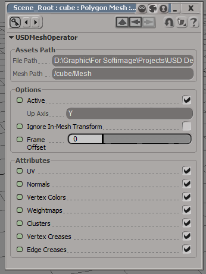

Last update: 29.05.2020
Description: This is the basic implementation of the USD format into Softimage.
Download: version 1.0, sources on the GitHub
How to install: addon can be installed as usual addon for Softimage. But it requires additional libraries: USD Python module and USD binaries. There are two ways to install Python module:
- Copy pxr folder from the archive to C:\Program Files\Autodesk\Softimage 2015\Application\python\Lib\site-packages\ directory, or
- Extract the archive anywhere and add the path to the pxr folder to PYTHONPATH environment variable
There is only one way to install USD binaries: extract it anywhere and add the path to the extracted folder to PATH environment variable.
This is example of the variables values:
Export from Softimage
|
File Path: path to the output file. You can set the extension of the file (*.usd, *.usda, *.usdc or *.usdz), but if it does not contains it, then the extension *.usd will be used. Objects to Export: what kind of objects should be exported. Strands will be exported only if Pointclouds are also checked ON. If Selection Only is checked ON, then only selected objects with all subobjects will be exported. Animation: interval for the animation. Mesh Attributes: what kind of mesh attributes should be exported. In most cases Normals does not need to be exported, except some cases, when object use user normals. Material: export material templates or not. Options:
|
Import to Softimage
|
File Path: input usd-file. Objects to Import: what kind of object should be imported. Mesh Attributes: what kind of attributes should imported for each polygon mesh. Lights: if Sycles addon is installed, then there is possibility to import lights as Sycles-lights. In Default mode lights imported as build-in Softimage light sources. Options:
|
If imported polygon mesh objects contains animated deformations, then special operator will be added to this mesh. This operator updates each frame point positions, uv-coordinates, normals, colors and weightmaps. If the topology of the mesh is changed during the animation, then the operator updates only point positions and ignore all other attributes.
|  |
Assets Path: path to usd-file and particular Mesh section in it. Options:
Attributes: what kind of attributes should be updated every frame. These checkboxes have the same values as in Mesh Attributes section on the window with import settings. |
More technical information about exported and imported data contains on the GitHub page with the addon source code.
Examples
Kitchen set - standard sample from the Pixar
Class room scene from Blender. It was exported to USD from Blender and imported to Softimage